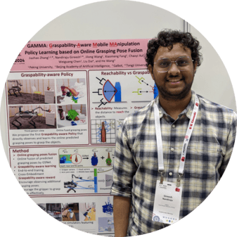
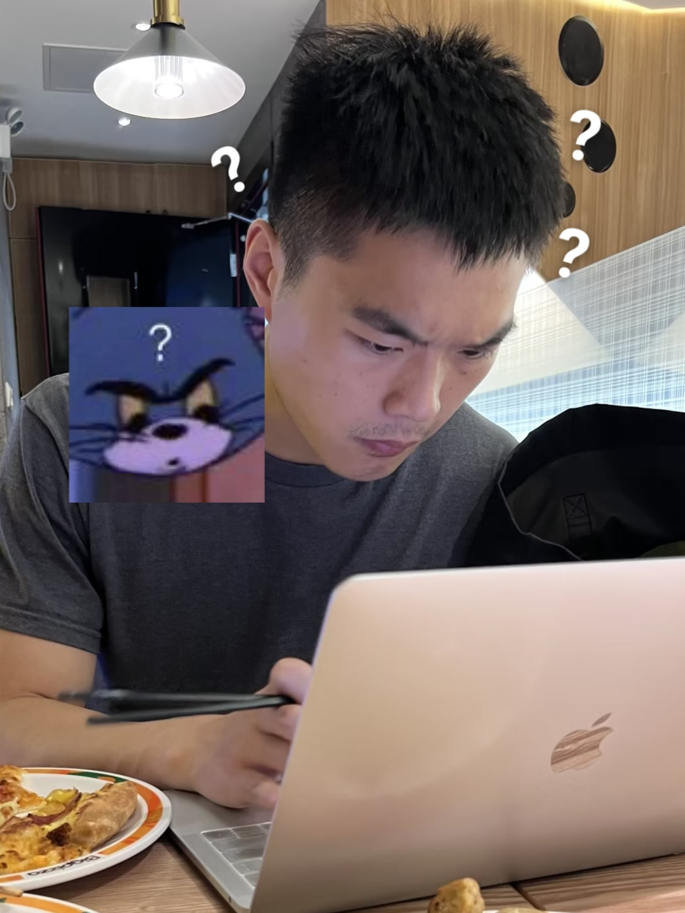

Abstract
Recent advances in generative models have shown promise in generating behavior plans for long-horizon, sparse reward tasks. While these approaches have achieved promising results, they often lack a principled framework for hierarchical decomposition and struggle with the computational demands of real-time execution, due to their iterative denoising process. In this work, we introduce Hierarchical Diffusion-Flow (HDFlow), a novel hierarchical planning framework that optimally leverages the strengths of diffusion and rectified flow models to overcome the limitations of single-paradigm generative planners. HDFlow employs a high-level diffusion planner to generate sequences of strategic subgoals in a learned latent space, capitalizing on diffusion's powerful exploratory capabilities. These subgoals then guide a low-level rectified flow planner that generates smooth and dense trajectories, exploiting the speed and efficiency of ordinary differential equation (ODE)-based trajectory generation. We evaluate HDFlow on four challenging furniture assembly tasks in both simulation and real-world, where it significantly outperforms state-of-the-art methods. Furthermore, we also showcase our method's generality on two long-horizon benchmarks comprising diverse locomotion and manipulation tasks.
Key Insight
The iterative denoising process of diffusion models is computationally expensive, making them ill-suited for the fast, low-level control required for real-time robotic interaction. Applying diffusion models naively at all levels of a hierarchy inherits this critical drawback, creating a bottleneck at the trajectory generation stage. This raises a fundamental question:
Is a single generative modeling paradigm optimal for all levels of a planning hierarchy?
We empirically show that the answer is no. The requirements for high-level strategic planning are fundamentally different from those of low-level trajectory generation. High-level planning demands exploration and multi-modal diversity to discover viable sequences of subgoals. In contrast, low-level planning demands speed, precision, and deterministic execution to translate a chosen subgoal into a smooth, dense trajectory.
Method
We introduce Hierarchical Diffusion-Flow (HDFlow), a novel hierarchical planning framework that optimally leverages the strengths of diffusion and rectified flow models. Our framework consists of two main stages: World Model Learning, where observations are encoded into a structured latent space, and Hierarchical Planner Training. The latter involves a High-Level diffusion planner generating sparse strategic subgoals with EBM guidance, and a Low-Level rectified flow planner synthesizing dense trajectories between subgoals using an ODE solver.

Simulation Results
Furniture assembly tasks across four environments and three difficulty levels.
Real-world Results
Physical robot experiments across three furniture assembly tasks.
RLBench Results
18 diverse manipulation tasks from the RLBench benchmark.
OGBench Results
Long-horizon locomotion and manipulation across diverse environments.
Authors

Nandiraju Gireesh*1,2
Chaoyi Xu2
1 Peking University · 2 Galbot · 3 University of Toronto
Citation
@inproceedings{gireesh2026hdflow,
title = {{HDFlow}: Hierarchical Diffusion-Flow Planning for Long-horizon Tasks},
author = {Nandiraju Gireesh and Yuanliang Ju and Chaoyi Xu
and Weiheng Liu and Yuxuan Wan and He Wang},
booktitle = {Proceedings of the 43rd International Conference on Machine Learning},
year = {2026},
}
For questions, contact Nandiraju Gireesh or Yuanliang Ju.